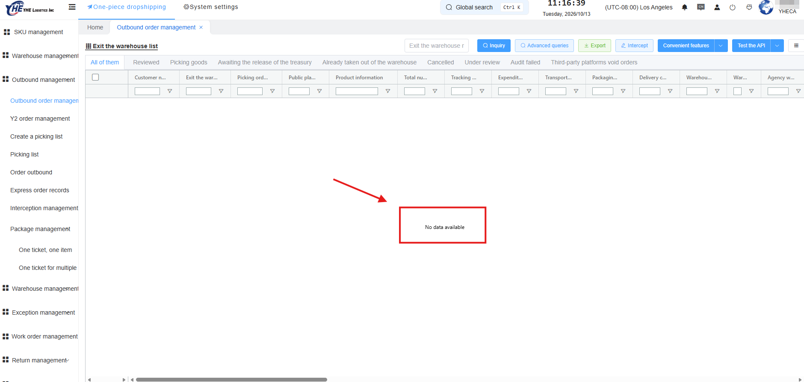
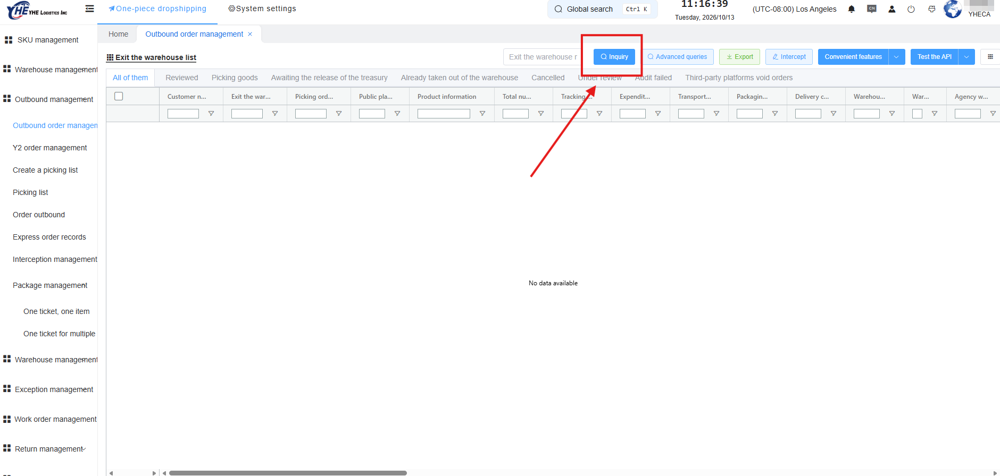
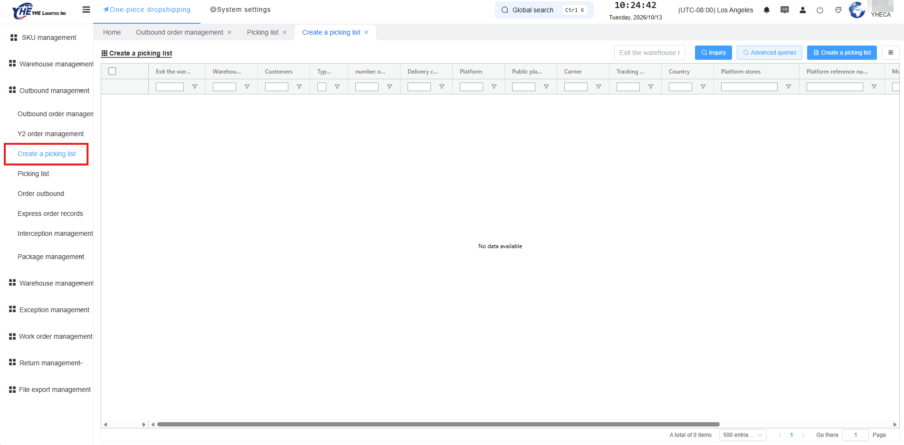
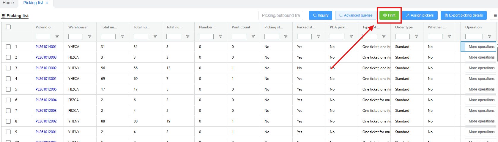
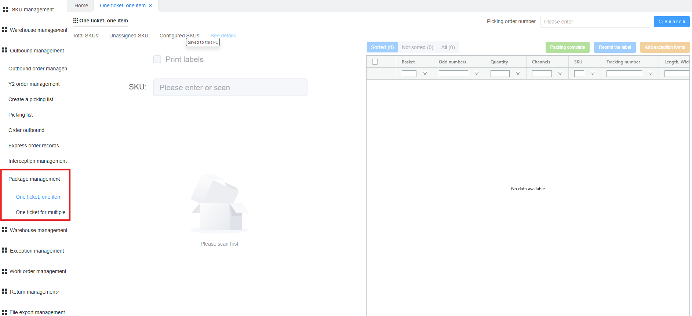
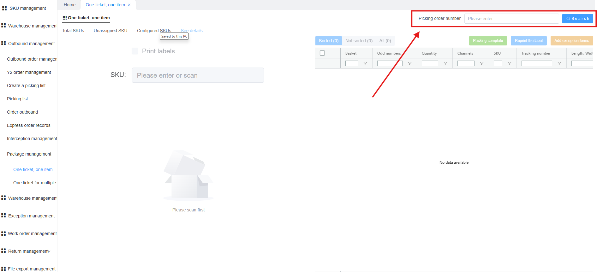
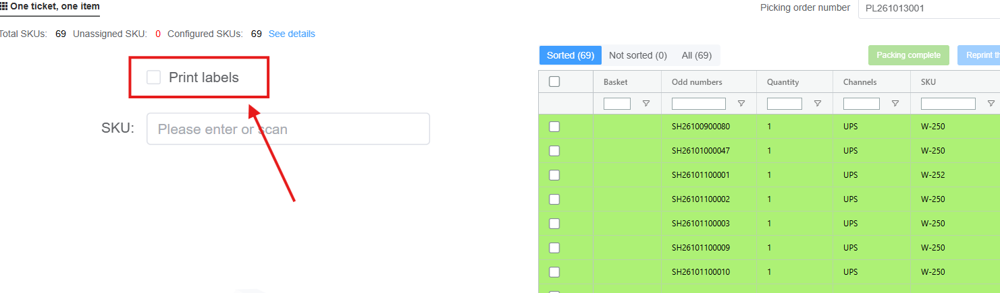

1. Purpose
This SOP describes how to process outbound orders in the warehouse management system (WMS), from receiving through picking and packing.
2. Scope
This SOP applies to all warehouse staff who use the WMS to receive, pick and pack orders.
3. Definitions
| Term | Definition |
|---|---|
| WMS | Warehouse management system |
| PL | Picking list: a document listing the orders and items to be picked |
| One ticket, one item | An order that contains a single item |
| One ticket for multiple | An order that contains more than one item |
4. General system use
4.1 Loading data
When a module is opened from the left menu, the WMS displays No data available until data is requested. This does not mean there are no records.

To load data, click Inquiry.

5. Procedure
5.1 Receiving
Not documented yet.
5.2 Shipping
5.2.1 Create a picking list
- In the left menu, select Outbound management → Create a picking list.
- Click Inquiry to load the orders.

Figure 3. Create a picking list - Check the Type of picking column. Each order is classified as One ticket, one item or One ticket for multiple.
- Create a separate picking list for each type.

5.2.2 Print a picking list
- In the left menu, select Picking list.
- Click Inquiry to load the picking lists.
- Locate the picking list by its PL number (see section 5.2.3).
- Select the picking list and click Print.

Figure 4. Print button on the Picking list screen Note: The WMS does not display the PL number after a picking list is created, and the included orders are removed from the Create a picking list screen. Find the new list on the Picking list screen.

5.2.3 Picking list numbering
PL numbers use the format: PL + YYMMDD + three-digit sequence number.
The date in the PL number is the day after the creation date.
| Created on | PL numbers |
|---|---|
| 10/14/26 | PL261015001, PL261015002, … |
5.2.4 Packing
- In the left menu, select Outbound management → Package management, then select the page that matches the picking list type: One ticket, one item or One ticket for multiple.

Figure 5. Package management pages - In Picking order number, enter the PL number and click Search.
Note: A packaging material pop-up may appear when you resume packing a picking list. See section 6.1.

Figure 6. Picking order number search - Select the Print labels check box.

Figure 7. Print labels check box - Scan the SKU of an item. The shipping label prints.
Note: If no label prints, see section 6.2.
- Wait until the label has printed before you scan the next item.


Caution: Scanning the same SKU in quick succession can print duplicate shipping labels.
6. Known issues
| # | Issue | Workaround |
|---|---|---|
| 6.1 | When you resume packing a picking list, a pop-up may ask you to select packaging material. The selection cannot be skipped. One ticket, one item orders do not require packaging material. | Select the smallest packaging material (usually the first option) to continue. |
| 6.2 | No shipping label prints after an item is scanned. The order may not have a shipping label, or printing failed for another reason. | Write down the order details and report them to your supervisor. |